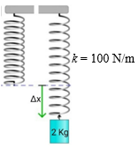
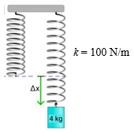

Energi potensial elastis atau pegas adalah energi yang diperlukan untuk menekan atau meregangkan pegas. Contohnya pada tali busur yang ditarik. Usaha yang dilakukan oleh pemanah pada tali busur, menyebabkan tali busur menyimpan energi. Saat tali busur dan anak panah dilepaskan, energi berubah menjadi energi kinetik. Energi yang tersimpan dalam tali busur yang meregang disebut dengan energi potensial elastis.
Energi potensial elastis ini dimiliki oleh benda-benda elastis, seperti karet, bola karet, pegas, dan lain-lain. Rumus energi potensial elastis adalah :
$E_P = \frac{1}{2}.k.\Delta x^{2}$
Oleh karena F = k ∆x, energi potensial elastis juga dapat dituliskan dalam persamaan berikut.
$E_P = \frac{1}{2}.F.\Delta x^{2}$
Keterangan:
Ep = energi potensial (Joule)
F = gaya pegas (N)
k = konstanta pegas (N/m)
Δx = perubahan panjang pegas (m)
Ayo Menonton
Untuk lebih memahami mengenai energi potensial elastis. Perhatikan video demonstrasi berikut ini dengan seksama.
Kesimpulan
KESIMPULAN AKAN MUNCUL SETELAH SELESAI MENONTON VIDEO
Besarnya energi potensial elastis berbanding lurus dengan konstanta pegas dan peregangan. Semakin besar konstantas pegas dan semakin jauh peregangan, maka energi potensial elastisnya semakin besar. Berlaku sebaliknya, jika konstanta pegas semakin kecil dan peregangan lebih dekat, maka energi potensial elastisnya semakin kecil.
Contoh (Klik)
Sebuah pegas memiliki konstanta sebesar 200 N/m. Saat pegas ditekan sejauh 20 cm, berapa energi yang tersimpan oleh pegas?
Diketahui: k = 200 N/m
Δx = 20 cm = 0,2 m
Ditanya: Ep=...?
Jawab: Ep= $\frac{1}{2}.k.\Delta x^{2}$ Ep= $\frac{1}{2}.200. 0,2^{2}$ Ep= $\frac{1}{2}.F.(0,04)$ Ep= 4 J Sehingga, energi potensial pada pegas itu sebesar 4 Joule.
Untuk meregangkan sebuah pegas sejauh 5 cm diperlukan gaya sebesar 20 N. Energi potensial pegas ketika meregang sejauh 10 cm adalah …
Diketahui: F = 20 N
Δx = 5 cm = 0,05 m
Ditanya: Ep ketika Δx=10 cm = 0,1 m
Jawab: F = k.Δx 20 = k.0,05 k = 400 N/m Maka didapat nilai k = 400 N/m
Selanjutnya, kita hitung energi potensial pada saat pegas meregang 0,1 m.
Ep= $\frac{1}{2}.k.\Delta x^{2}$ Ep= $\frac{1}{2}.400. (0,1)^{2}$ Ep= $\frac{1}{2}.400. (0,01)$
Ep= 2 J
Sehingga, energi potensial pada pegas yang meregang 0,1 m sebesar 2 Joule.
Gambar berikut merupakan perubahan pegas sebelum diberi beban dan setelah diberi beban.

Pertambahan panjang pegas tersebut adalah …(g = 10 m/s2)
Diketahui: m = 2 kg
k = 100 N/m
g = 10 m/s2 Ditanya: Δx=...?
Jawab: F = k.Δx m.g= k.Δx 2.10= 100.Δx Δx= 0,2 m Sehingga, pertambahan panjang pegas sebesar 0,2 m.
Mari Mencoba
Gunakan ( . ) sebagai koma
Sebuah pegas memiliki konstanta sebesar 100 N/m. Saat pegas ditekan sejauh 30 cm, berapa energi yang tersimpan oleh pegas?
JAWABAN
Jawaban Salah
Sayang sekali. Silahkan pelajari kembali materi di atas dengan penuh semangat.
Jawaban benar
Diketahui: k = 100 N/m
Δx = 30 cm = 0,3 m
Ditanya: Ep=...?
Jawab: Ep= $\frac{1}{2}.k.\Delta x^{2}$ Ep= $\frac{1}{2}.100. 0,3^{2}$ Ep= $\frac{1}{2}.F.(0,09)$ Ep= 4,5 J Sehingga, energi potensial pada pegas itu sebesar 4,5 Joule.
Untuk meregangkan sebuah pegas sejauh 4 cm diperlukan gaya sebesar 20 N. Berapakah energi potensial pegas ketika meregang sejauh 10 cm adalah?
JAWABAN
Jawaban Salah
Sayang sekali. Silahkan pelajari kembali materi di atas dengan penuh semangat.
Jawaban benar
Diketahui: F = 20 N
Δx = 4 cm = 0,04 m
Ditanya: Ep ketika Δx=10 cm = 0,1 m
Jawab: F = k.Δx 20 = k.0,04 k = 500 N/m Maka didapat nilai k = 500 N/m
Selanjutnya, kita hitung energi potensial pada saat pegas meregang 0,1 m.
Ep= $\frac{1}{2}.k.\Delta x^{2}$ Ep= $\frac{1}{2}.500. (0,1)^{2}$ Ep= $\frac{1}{2}.500. (0,01)$
Ep= 2,5 J
Sehingga, energi potensial pada pegas yang meregang 0,1 m sebesar 2 Joule.
Gambar berikut merupakan perubahan pegas sebelum diberi beban dan setelah diberi beban.

Jika percepatan gravitasi 10 m/s2, berapakah pertambahan panjang pegas tersebut ?
JAWABAN
Jawaban Salah
Sayang sekali. Silahkan pelajari kembali materi di atas dengan penuh semangat.
Jawaban benar
Diketahui: m = 4 kg
k = 100 N/m
g = 10 m/s2 Ditanya: Δx=...?
Jawab: F = k.Δx m.g= k.Δx 4.10= 100.Δx Δx= 0,4 m Sehingga, pertambahan panjang pegas sebesar 0,4 m.